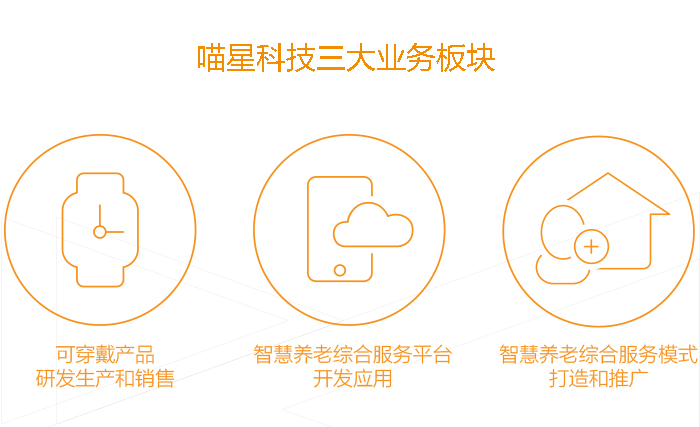

青岛喵星信息科技有限公司，是一家致力于智能穿戴产品研发生产、智慧养老服务体系打造的高新技术企业。公司成立于2012年，注册资金2000万元，全资控股青岛喵星养老产业发展有限公司和深圳喵星智造科技有限公司，目前拥有员工136人，其中研发人员占到80%以上。

喵星科技在硬件产品的高精度检测方法、GPS/LBS综合定位算法、功耗控制、数据链路等领域居国内领先水平。公司通过ISO9001质量管理体系认证、拥有42项发明专利、实用新型专利及软件著作权，并具有工信部颁发的手机生产牌照。所有硬件产品全部通过国际相关质量认证，通讯类产品均具有国家电信入网许可资质。
公司创造性地提出居家养老的“1+2+N”模式，并在全国推广落地，得到了社会各界一致认可和好评。2016年5月，该模式被国家发改委列为国家服务业发展引导资金重点扶持项目。
目前，喵星科技的代表产品有：星尊系列手表手机，星悦系列手表手机，星晖系列手表手机；喵星智慧养老大数据中心，喵星安全监护服务平台（APP），喵星健康管理平台（APP），滴滴家政服务平台（APP）等。